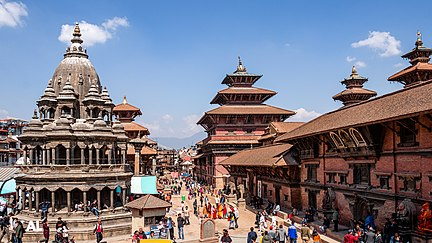
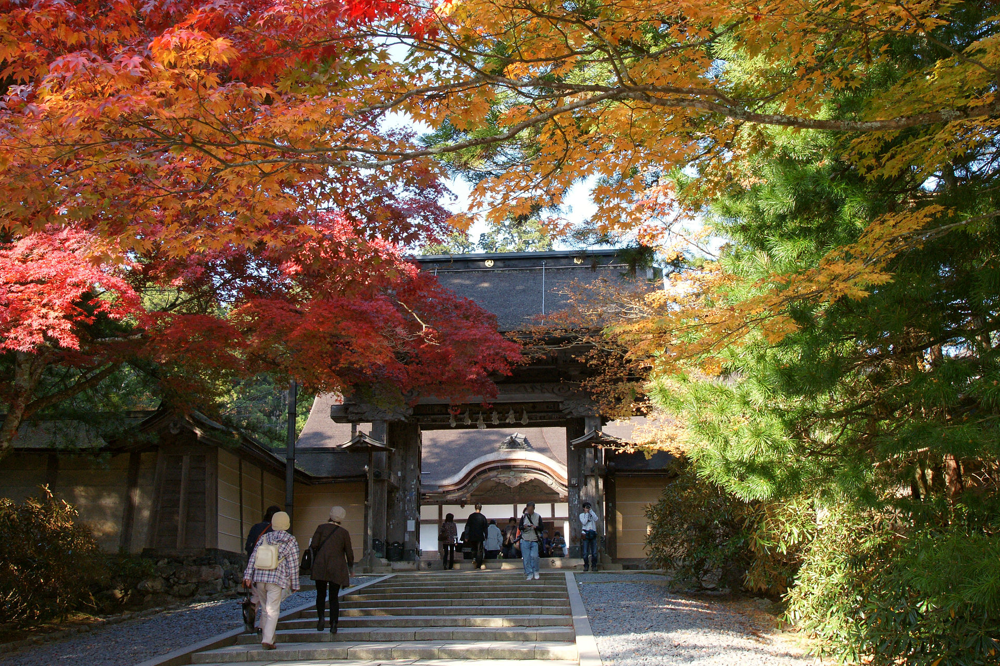

This is a paragraph that introduces the topic of this page. HTML stands for Hyper Text Markup Language, which is used to create web pages. HTML uses tags to define the structure and content of a web page.
Nepal is a landlocked country in South Asia, located in the Himalayas. It is bordered by China to the north and India to the south, east and west. Nepal is known for its diverse culture, natural beauty and adventure tourism. Nepal is home to eight of the world's ten highest mountains, including Mount Everest, the highest point on Earth.
Source: [Wikipedia]
France is a country in Western Europe, with several overseas territories and regions. France has a long and rich history, dating back to the ancient Gauls and Romans. France is famous for its art, architecture, cuisine, fashion and literature. France is also a founding member of the European Union and a nuclear power.
Source: [Wikipedia]
Japan is an island country in East Asia, located in the Pacific Ocean. Japan consists of four main islands and many smaller ones. Japan has a unique culture that blends tradition and modernity. Japan is known for its technology, anime, manga, video games and cuisine. Japan is also one of the world's most populous and developed countries.
Source: [Wikipedia]